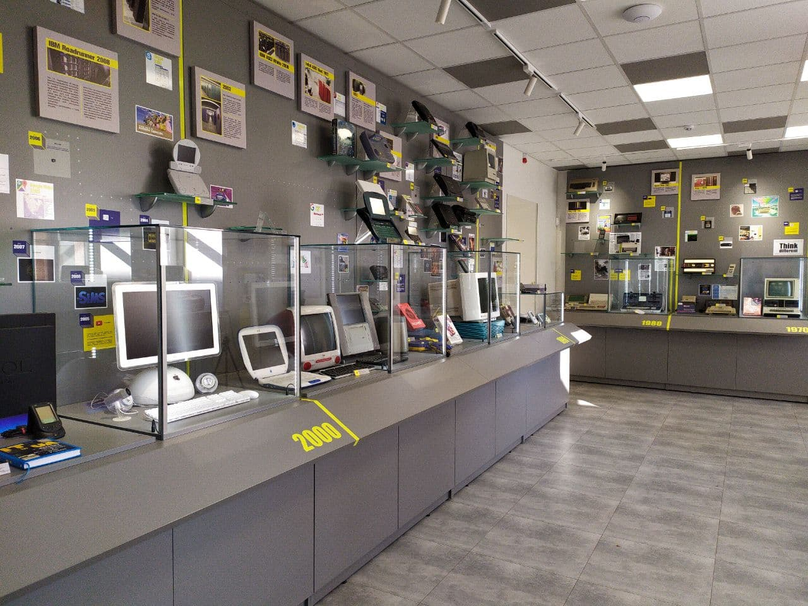
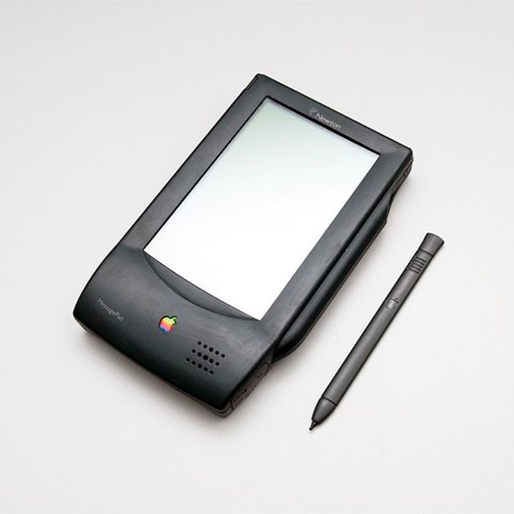
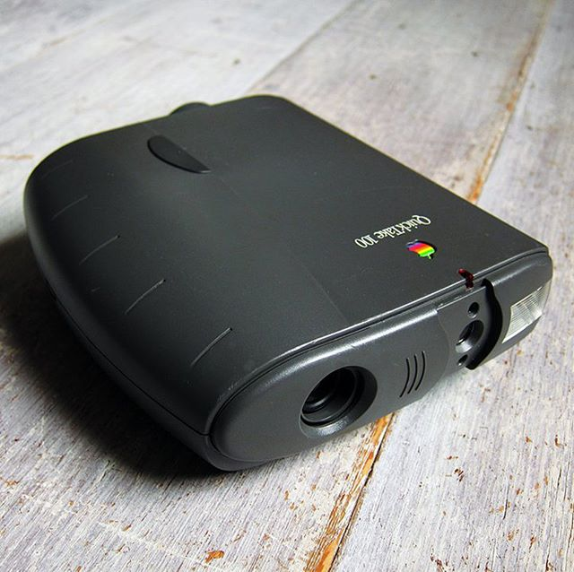
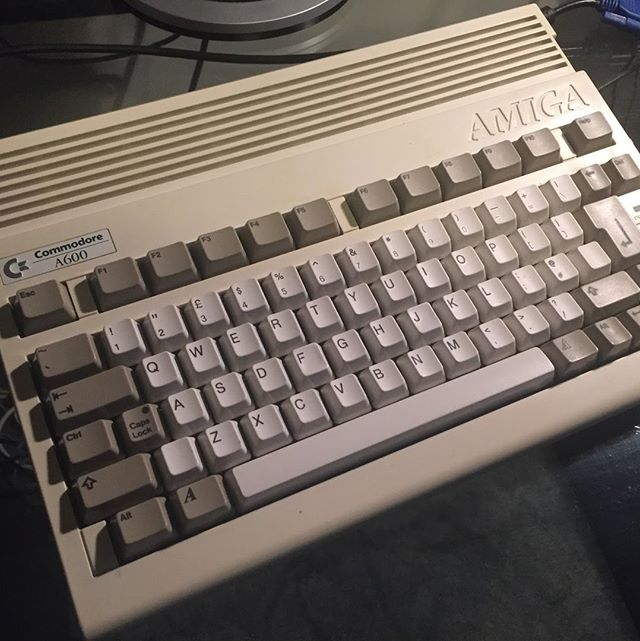

Оглядова екскурсія
Для всіх, хто вперше в музеї.
Тривалість: [ЗАПОВНИТИ]
Ціна: [ЗАПОВНИТИ]
Екскурсії, експонати й курси для дітей і дорослих.

Для всіх, хто вперше в музеї.
Тривалість: [ЗАПОВНИТИ]
Ціна: [ЗАПОВНИТИ]
Для класів. Бронюйте заздалегідь.
Тривалість: [ЗАПОВНИТИ]
Ціна: [ЗАПОВНИТИ]
Для тих, хто хоче глибше розібратися в одній темі.
Тривалість: [ЗАПОВНИТИ]
Ціна: [ЗАПОВНИТИ]
Для батьків із дітьми.
Тривалість: [ЗАПОВНИТИ]
Ціна: [ЗАПОВНИТИ]

Apple · 1993
Особистий цифровий помічник на ОС Newton із сенсорним екраном, задовго до появи слова «планшет».

Magnavox · 1972
Перша консоль, яку можна було під’єднати до телевізора.

Apple · 1986
Модель із лінійки Apple II, першого серійного комп’ютера компанії.

Apple разом із Kodak · 1994
Одна з перших цифрових фотокамер.

Commodore · 1992
Повноцінний комп’ютер у корпусі клавіатури.

Nintendo · 1983
Оригінал консолі, клоном якої була відома в Україні Dendy.
[Місце для кнопки «Показати більше експонатів» — додається згодом, при розширенні колекції]
Для кого: дорослі 30+
Старт:
Формат: офлайн і онлайн
Тривалість: 2–3 місяці, заняття по 90 хвилин
Безкоштовно
Для кого: підлітки 14–19 років
Старт:
Формат: онлайн
Тривалість: 2 місяці, заняття по 90 хвилин
Безкоштовно
Для кого: діти 10–12 років
Формат: онлайн
Тривалість: півроку, заняття по 90 хвилин
Безкоштовно
Дякуємо! Ми зателефонуємо Вам найближчим часом